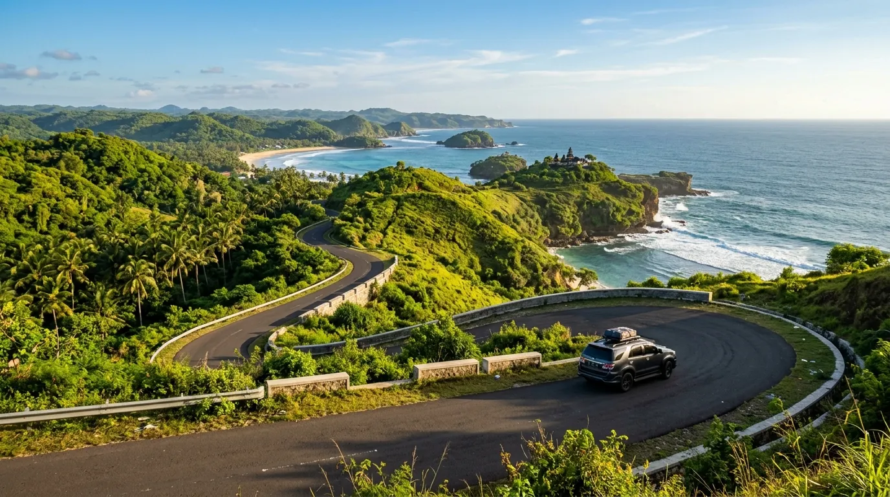

- 1. Kenapa Pantai Malang Selatan Layak Dikunjungi?
- 2. Rute dan Akses Menuju Pantai Malang Selatan
- 3. Kisaran Harga Tiket Masuk Pantai Malang Selatan
- 4. Estimasi Biaya Total Perjalanan
- 5. Fasilitas Umum di Kawasan Pantai Malang Selatan
- 6. Tips Praktis Berkunjung ke Pantai Malang Selatan
- FAQ Seputar Pantai Malang Selatan
Kalau ditanya destinasi liburan yang lagi naik daun di Jawa Timur, pantai Malang selatan selalu masuk daftar teratas. Kawasan ini punya puluhan pantai dengan karakter berbeda-beda, mulai dari pantai bertebing karang dramatis, teluk berair tenang, hingga muara sungai yang unik. Artikel ini merangkum panduan lengkap berkunjung ke pantai Malang selatan, mulai dari rute, akses jalan, sampai kisaran harga tiket masuknya.
1. Kenapa Pantai Malang Selatan Layak Dikunjungi?
Pantai Malang selatan berhadapan langsung dengan Samudera Hindia, sehingga menawarkan karakter pantai yang berbeda dari pantai utara Jawa: ombaknya lebih besar, airnya jernih kebiruan, dan lanskapnya dikelilingi perbukitan serta tebing karang. Kawasan ini menyimpan banyak "surga tersembunyi" yang belakangan makin populer berkat pembangunan Jalur Lintas Selatan (JLS) yang membuat akses antar-pantai jauh lebih mudah dan cepat dibanding beberapa tahun lalu.
2. Rute dan Akses Menuju Pantai Malang Selatan
Secara umum ada beberapa jalur utama yang bisa dipakai dari pusat Kota Malang, tergantung pantai tujuan:
- Jalur Turen (Timur) — jalur ini biasa dipakai untuk menuju kawasan Sendang Biru, Pantai Tiga Warna, dan Goa Cina. Jalannya berkelok namun sudah beraspal halus.
- Jalur Bantur (Tengah/Barat) — jalur utama menuju Pantai Balekambang dan Teluk Asmara, dengan kondisi jalan yang terus diperlebar untuk memudahkan akses bus pariwisata.
- Jalur Gondanglegi–Gedangan — jalur alternatif menuju klaster pantai barat seperti Ngudel, Ngantep, dan Ungapan, sekaligus akses langsung ke Jalur Lintas Selatan.
Secara keseluruhan, jarak tempuh dari pusat Kota Malang ke kawasan pantai selatan berkisar 58–75 km, dengan waktu perjalanan sekitar 2–3 jam menggunakan kendaraan pribadi tergantung pantai tujuan dan kondisi lalu lintas. Rampungnya proyek pelebaran Jalur Lintas Selatan membuat sebagian besar akses jalan kini jauh lebih lebar dan nyaman dibanding sebelumnya, meski beberapa ruas menjelang lokasi pantai masih berkelok dan menanjak.

Opsi Transportasi
- Kendaraan pribadi — pilihan paling fleksibel, terutama jika ingin beach hopping dari satu pantai ke pantai lain dalam satu hari.
- Sewa mobil dengan sopir — cocok untuk wisatawan luar kota yang belum familiar dengan medan jalan perbukitan.
- Bus DAMRI — tersedia rute wisata menuju Pantai Balekambang dan Sendang Biru dari Pool DAMRI Malang, dengan jadwal keberangkatan pagi hari dan tiket yang bisa dipesan lewat aplikasi DAMRI Apps.
3. Kisaran Harga Tiket Masuk Pantai Malang Selatan
Salah satu daya tarik pantai Malang selatan adalah harga tiket masuknya yang sangat ramah di kantong. Berikut gambaran umum kisaran harganya:
| Pantai | Perkiraan HTM |
|---|---|
| Pantai Balekambang | Rp10.000 (weekday) – Rp20.000–25.000 (weekend/libur) |
| Pantai Teluk Asmara | sekitar Rp15.000–20.000 |
| Pantai Tiga Warna | Rp10.000 + biaya guide wajib Rp150.000/rombongan |
| Pantai Ungapan | sekitar Rp10.000 |
| Pantai Wonogoro | sekitar Rp10.000 |
| Pantai Sendang Biru | sekitar Rp10.000 |
| Pantai Tanjung Penyu | sekitar Rp10.000 |
Catatan: harga tiket masuk bisa berubah sewaktu-waktu tergantung kebijakan pengelola, hari kunjungan (weekday/weekend), maupun musim liburan. Sebaiknya cek informasi terbaru lewat media sosial resmi pengelola atau konfirmasi langsung di lokasi sebelum berangkat.
Selain HTM, beberapa pantai konservasi seperti Tiga Warna menerapkan biaya tambahan wajib berupa jasa pemandu (sekitar Rp150.000 per rombongan) dan sewa alat snorkeling (sekitar Rp25.000 per set), sebagai bagian dari upaya menjaga kelestarian ekosistem terumbu karang di kawasan tersebut.
4. Estimasi Biaya Total Perjalanan
Selain tiket masuk, ada beberapa pos biaya lain yang perlu disiapkan:
- Parkir kendaraan — umumnya berkisar Rp5.000–15.000 tergantung jenis kendaraan.
- Toilet/kamar bilas — sekitar Rp2.000–5.000 per pemakaian.
- Sewa alat snorkeling — sekitar Rp25.000 per set di pantai-pantai yang menyediakan spot snorkeling.
- Camping/tenda — biaya izin mendirikan tenda umumnya sekitar Rp20.000 per tenda, di luar sewa tenda jika tidak membawa sendiri.
- Penginapan — homestay di sekitar Sendang Biru dan Balekambang tersedia mulai kisaran Rp275.000 per malam.
Untuk rombongan kecil yang menginap semalam dan mengunjungi beberapa pantai sekaligus, total pengeluaran logistik dan akomodasi biasanya berkisar sekitar Rp1.000.000–1.500.000 per rombongan, tergantung jumlah orang dan gaya perjalanan.
Dengan harga tiket masuk mulai dari Rp10.000 dan akses yang semakin mudah, pantai Malang selatan menjadi destinasi liburan yang sangat ramah di kantong tanpa mengorbankan keindahan alam.
5. Fasilitas Umum di Kawasan Pantai Malang Selatan
Meski karakter tiap pantai berbeda, sebagian besar sudah dilengkapi fasilitas dasar seperti area parkir, toilet, mushola, warung makan, dan gazebo. Beberapa pantai populer seperti Balekambang dan Teluk Asmara bahkan sudah menyediakan pilihan penginapan berupa homestay atau villa bagi yang ingin bermalam.
6. Tips Praktis Berkunjung ke Pantai Malang Selatan
- Unduh peta offline sebelum berangkat, karena sinyal seluler sering hilang di sepanjang jalur pesisir dan perbukitan.
- Bawa uang tunai secukupnya dalam pecahan kecil, sebab akses ATM dan mesin EDC masih sangat terbatas di kawasan ini.
- Isi bahan bakar penuh sebelum masuk kawasan pantai, karena SPBU cukup jarang ditemui di sepanjang rute.
- Datang pagi hari untuk menghindari keramaian sekaligus mendapatkan cuaca yang lebih bersahabat.
- Gunakan tabir surya reef-safe agar tidak merusak ekosistem terumbu karang saat berenang atau snorkeling.
- Bawa kantong sampah sendiri dan pastikan membawa kembali sampah pribadi, karena beberapa pantai menerapkan pemeriksaan barang bawaan untuk menjaga kebersihan kawasan.
- Rencanakan rute dengan matang jika ingin mengunjungi lebih dari satu pantai dalam sehari (beach hopping), karena jarak antar-pantai bisa cukup jauh meski berada di kawasan yang sama.